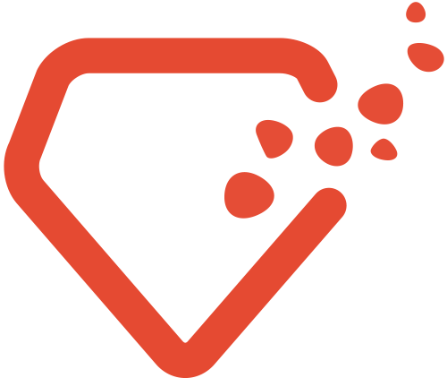

Hello, World!
Rails Girls kommt nach Dresden.
Lerne in drei Tagen die Grundlagen des Programmierens mit Ruby on Rails in einer der schönsten Städte Deutschlands.
Vom 08.11.2013 bis zum 10.11.2013 haben wir ein Programm organisiert, das Einsteigern erste Kenntnisse im Programmieren vermitteln soll. Freitag Nachmittag richtet sich dabei an Neugierige, die nie zuvor programmiert haben. Wir erklären die Grundlagen des Web, HTML und CSS und entwerfen eine erste Webseite. Am Samstag tauchen wir dann endlich ein in die Programmierung von Software mit Ruby und knüpfen an den ersten Tag an, indem wir der Webseite durch eine Ruby on Rails-Anwendung Leben einhauchen. Sonntag ist dann für alle von euch, die gerne die Schwimmflügel ablegen wollen um den ersten richtigen Tauchgang zu bewältigen.
Was das kostet? Gar nichts!
Dank unserer Sponsoren ist der Besuch des gesamten Wochenendes für alle Teilnehmer kostenlos.
Bewirb dich hier! (Noch x Plätze frei)
Bewerbungsschluss ist der 03.11.2013. Bitte beachtet außerdem, dass wir nur einen begrenzten Platz haben und deshalb die Teilnehmerzahl beschränken müssen. Sollte die Kapazität bereits vor dem 03.11.2013 ausgereizt sein, werden wir die Bewerbungen früher schließen.
Hier geht es zur Bewerbung! Anmeldungschluss ist der 3. November.
Hello World!
Rails Girls is finally coming to Dresden, Germany. Learn the basics of web development with Ruby on Rails in one of Germany's most beautiful cities.
We are offering three days full of fun, where day one aims on people who have hardly any experience in programming. Followed by day two, our main day, where we dive right into web development with Ruby on Rails.
Day three will be for the girls, who want to dive even deeper into the topic on this weekend.
Apply here! Application deadline 3rd November.
Follow us on twitter @RailsGirlsDD.You learn designing, prototyping and coding with the help from our coaches.
You need your own laptop, curiosity and a sprinkle of imagination!
Want to help? You can always contact us :) Email us.
| 16:00 - 19:30 |
Installation partyGet know the attendees a little bit before hand. Bring your laptop if you can, so we can install Ruby on Rails for you.Have a drinkIf the group likes to, we can go to a bar or lounge. |
|---|
| 10:00 - 11:00 |
Registration and clusering groups |
|---|---|
| 12:30-13:30 |
Lunch breakSummon your power for the most exciting part of the day! |
| 13:30-14:00 |
Rails fundamentalsReally brief introduction into Rails' core pinciples |
| 14:00 - 18:00 |
Build that damn thing!Get your hands dirty and build your own application |
| 18:00 - open |
Summary, Diner, DrinksRecap of what we’ve learned and how it all fits together. |
| 10:00 - 15:00 |
Already in love with rails?If you can't get enough, seize this sunday to extend your application with the assistance of our coaches |
|---|
Location: Business Kitchen, Torikatu 23, 4th floor
Big thanks to these organizations and people who helped to make this happen!
ObjectFab is a agency which provides Java, Ruby on Rails, JRuby on Rails and iOS consulting and development services.
CoFab is a cowrking space situated in Dresden. Get your work down in a modern and productive environment.
 bitbites is a Ruby on Rails consultancy from Dresden, providing Test Driven Development, refactoring, coaching and rescue services.
How much does the workshop cost? Nothing, it's free! You just need to be excited!
Who is this aimed for? Women of any age with basic knowledge of working with a computer. We’ve had people of all ages taking part. Most of the speeches are given in english, but small group work can also be done in finnish. Please bring your laptop.
Can men attend? Yes, but you need to be accompanied by an interested lady. Also, girls are given a priority.
I know how to program - How can I help? We’re also looking for people to be coaches. We’ll have a two-three hour workshop before the event to walk you through the curriculum. Email us